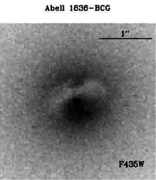

PHYS
4951 Capstone II.
Fall 2026
Regular Class Home page:
http://jpastro.net/PHYS4951-3971/syllP4951F26.html
Department: Physics and Astronomy
Class time and place: Mon 2:00-3:00 pm, Thu 10:00-10:50 am in SA 108A
Section: 1 (CRN=33323)
Instructor: Dr. Jason Pinkney
Office hours in 111 Science Annex at
these times:
9-11 am (R), 1-3 pm (W), and 2-3 pm (M).
Email j-pinkney@onu.edu
or call
419-772-2740.
Instructor's Home page: https://jpastro.net/
Credit hours: 1
|

|
---------------------------------------
NEW STUFF
(Watch this spot for new links, data, etc.)
Linux tutorial. Check out "Linux Commands" for use of the command line.
HST archive results for Abell 1836-bcg
HyperLeda galaxy database
---------------------------------------
PHYS 4951 Course Description:
The Capstone 2 course requires the student to complete one or more
presentations of the research project they began in Capstone 1.
This must include a powerpoint presentation to the department,
and may also include a poster presentation at regional and/or
local science meetings, and a capstone paper.
(This Capstone Research Project will involve
extragalactic astronomy: the measurement of gas kinematics
in the core of a giant elliptical galaxy.) In order to write
the presentations, additional analyses such as creation of
plots will be needed. New astronomical software for
plotting and poster production will need to be used.
This work will require weekly meetings with advisor Dr. Pinkney
for guidance.
Course Attributes:
Effective Communication and Writing, Critical and Creative Thinking
Prerequisites:
Undergraduate (Semester) level PHYS 3951. Minimum grade of D or S.
Text:
No textbook required. We depend on online resources, such as
NED
and scientific
papers, for the research.
Course Goals, Objectives, and Learning Outcomes
Students should be able to:
- Utilize specialized software for astronomical data reduction and analysis;
- Clearly present scientific results in poster and powerpoint format;
- Use software for creating graphs and plots;
- Critically read scientific papers to gather information;
- Practice truthful and ethical behaviors in research
Tentative Calendar
| Week of |
Activity |
Progress |
| 8/24 |
Determine meeting times |
|
| 8/31 |
Research |
Learn SM for kinematics plots |
| 9/7 |
Research |
Make kinematics plots |
| 9/14 |
Research |
Make plots |
| 9/14 |
Research |
Start using poster software |
| 9/21 |
Research |
|
| 9/28 |
Research |
Creating poster |
| 10/5 |
Research |
Creating poster |
| 10/15 |
Research |
(SPRING BREAK on 10/12) |
| 10/19 |
Research |
PRESENT POSTER at EGLS 10/23-24 |
| 10/26 |
Research |
Start powerpoint template |
| 11/2 |
Research |
Start paper template |
| 11/9 |
Research |
continue work on papers |
| 11/16 |
Research |
continue work on papers |
| 11/23-27 |
THANKSGIVING |
continue work on papers |
| 11/30 |
Finish/present capstone |
Complete powerpoint |
| 12/7 |
Finish/present |
Complete paper |
Grading:
Grading will be based on progress towards the goal of presenting
a poster paper at the Fall meeting of the EGLS (Oct 23-24, 2026).
This will be prerequisite work towards determining the black
hole mass of Abell 1836-bcg. The goal is to present
3 rotation curves (for 3 slit positions) and compare them
to published work.
Completion of the poster and capstone presentation is considered A
work.
There will be many check points along the way, as shown in the
"tentative calendar".
Other Course Policies
Attendance is
at the weekly meetings is important for making progress on this capstone /
independent research project. We will meet 1 hour per week for
every credit that the student is enrolled in.
Independent work is
is also very important for making progress on the capstone.
This means working (either in the lab or at home) on the research
outside of the meeting times. The student is expected to do at
least 1 hour per week of independent work in addition to the meeting times,
at least until completion of the project. Work at "home" can consist of
reading relevant research papers, studying tutorials, and reviewing
notes taken during research meetings.
Cancelled Class.
If a class has to be cancelled due to weather or one of us being absent,
I am required to do something to advance the curriculum. I will notify
the student about what to do through an email. I will most likely assign
research tasks to be done independently.
AI Usage.
The administration wants each instructor to specify how AI can be used
by the student in each class. I choose "AI is permitted with Limitations".
When carrying out original research
in this class, you can use an AI search engine to look things up.
But be wary of errors that AI can produce, in particular with citations
of sources of information. You will be producing a poster paper
and you should avoid using AI to compose a first draft of a paragraph,
or a section of the poster such as an introduction. However, you
could use AI to rewrite your paragraphs in order to improve grammar and
spelling.
Common syllabus information.
Here is
common course information
which applies to all courses. This includes the covid Safety Plan, Grading Modes,
Readmission, Repeat Policies, and more.
Other Mandatory Syllabus Information: